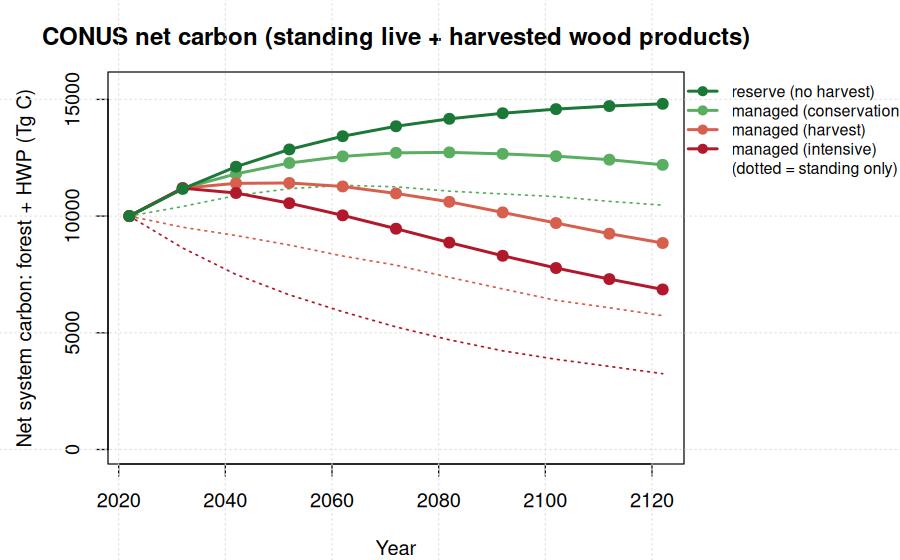

The hybrid yield form is now fit in production per forest-type x ecoregion x owner cell across 48 states, and a harvested wood products (HWP) layer lets the management scenarios be compared on a forest + products carbon basis rather than standing stock alone.
The hybrid (Chapman-Richards growth + an exponential decline tail beyond the per-cell empirical culmination) is now a fitted, FIA-anchored production engine. Anchored to the same 2022 standing carbon as the peak-decline engine (10,002 Tg C), its senescence tail yields a steadily more conservative trajectory: by 2122 CONUS reserve is 11,794 Tg C, about 20% below peak-decline's 14,813. The HWP layer adds the carbon held in wood products: it does not change reserve, but turns the managed 100-year change from standing-only -43% / -68% (harvest / intensive) into net -1,155 / -3,145 Tg C, and conservation from +469 to +2,196.
ycx_hybrid_fit.R fits y = A·(1-exp(-k·age))^p ·
exp(-d·max(0, age - A*)) per cell (fallback cell -> forest-type ->
state), with A* the empirical culmination age. ycx_treemap_hybrid.R
applies it to TreeMap 2022 pixels (reserve), and ycx_hybrid_anchor.R
scales each state so its 2022 total matches the FIA-anchored production baseline
(median scalar 0.86), preserving the trajectory shape. Anchored versus the
current peak-decline projection:
| Year | peak-decline (Tg C) | hybrid, anchored (Tg C) | diff |
|---|---|---|---|
| 2022 | 10,002 | 10,002 | 0% |
| 2052 | 12,858 | 12,511 | -2.7% |
| 2082 | 14,170 | 12,987 | -8.4% |
| 2102 | 14,585 | 12,513 | -14.2% |
| 2122 | 14,813 | 11,794 | -20.4% |
Anchored to the same 2022 standing carbon, the hybrid diverges progressively
below peak-decline, reaching about 20% lower by 2122. That gap is the senescence
the decline tail introduces beyond each cell's empirical culmination:
peak-decline keeps accumulating old-stand carbon, while the hybrid (the better
CV-fitting form) turns it over. The anchored hybrid is served as
yc_hybrid_v1 and is a production-ready candidate to replace
peak-decline pending team sign-off, since the choice materially changes the
100-year old-forest carbon projection.
The scenario projections track standing live carbon and off-stump removals;
they do not credit the carbon stored in wood products. ycx_hwp.R
adds an IPCC-style first-order-decay HWP pool: each decade's removed carbon is
split into sawtimber (long-lived in-use products, half-life 35 yr) and pulpwood
(short-lived, 2 yr) by the national merch split, each cohort decaying
exponentially. Net system carbon = standing live + HWP in-use.

| Scenario | standing-only 100-yr | HWP buffer 2122 | net 100-yr (forest+HWP) |
|---|---|---|---|
| reserve (no harvest) | +4,811 | 0 | +4,811 |
| managed (conservation) | +469 | 1,727 | +2,196 |
| managed (harvest) | -4,268 | 3,113 | -1,155 |
| managed (intensive) | -6,753 | 3,608 | -3,145 |
HWP materially narrows the gap: the managed scenarios still lose system carbon relative to reserve, but far less than standing stock alone implies. This is a forest + in-use-products accounting; it does not yet include landfill carbon or product substitution benefits, which would narrow the gap further.
PERSEUS, Center for Research on Sustainable Forests, University of Maine. Computation on OSC Cardinal (PUOM0008). Curves and HWP allocation fit from FIA tree data; TreeMap 2022 is USFS RDS-2025-0032. HWP half-lives follow IPCC defaults (sawnwood ~35 yr, paper ~2 yr).